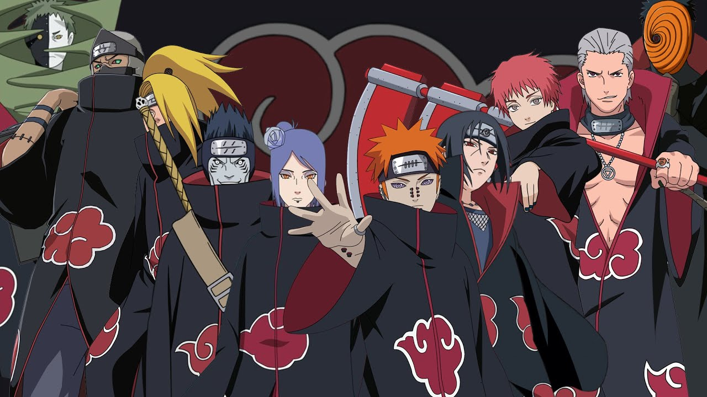

Naruto Uzumaki
Naruto é o protagonista do anime. Desde criança sonhava em se tornar
Hokage para conquistar o respeito de todos da Vila da Folha.
Com muita dedicação, tornou-se um dos ninjas mais poderosos do mundo.
- Vila: Konoha
- Time 7
- Jinchuuriki da Kurama
- Sétimo Hokage

Sasuke Uchiha
Sasuke pertence ao lendário Clã Uchiha. Após perder sua família,
passou a buscar poder para derrotar seu irmão Itachi.
Durante a história torna-se rival e amigo de Naruto.
- Clã Uchiha
- Sharingan
- Rinnegan
- Time 7

Sakura Haruno
Sakura é especialista em ninjutsu médico.
Foi treinada por Tsunade e tornou-se uma das kunoichis
mais fortes da Vila da Folha.
- Ninja Médica
- Grande força física
- Time 7

Kakashi Hatake
Kakashi foi o líder do Time 7.
Conhecido como "Ninja Copiador", dominou milhares de técnicas
utilizando o Sharingan.
- Sexto Hokage
- Sharingan
- Time 7
Organização Akatsuki

A Akatsuki era uma organização formada por ninjas renegados.
Seu objetivo era capturar todas as Bestas com Cauda para executar
o Plano Olho da Lua.
Alguns membros
- Pain
- Konan
- Itachi Uchiha
- Kisame
- Deidara
- Sasori
- Hidan
- Kakuzu
- Tobi (Obito)
Curiosidade
Naruto Shippuden possui mais de 500 episódios,
sendo um dos animes mais populares da história.